제과쇼케이스
제과쇼케이스 수명, 오래 쓰는 빵집이 매일 챙기는 것들
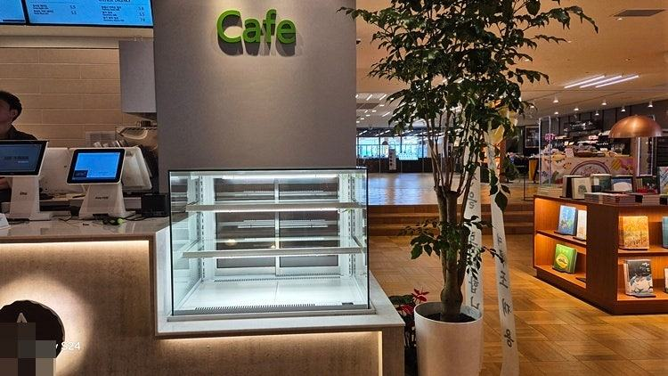
제과쇼케이스를 오래 쓰는 매장은 기계실 먼지와 통풍 공간을 관리해 콤프레셔가 쉬는 시간을 확보하고, 습기와 결로를 줄이며, 조명 열과 오븐 열을 쇼케이스에서 떼어 놓습니다. 반대로 냉각이 눈에 띄게 느려지거나 같은 고장이 반복되면 수명이 다해 가는 신호로 보시고 점검을 받아 보세요.
안녕하세요. 베이커리와 디저트 카페용 진열 냉장고를 연구하고 만들어 온 한성쇼케이스입니다.
같은 해에 들인 제과쇼케이스인데 어느 매장은 아직 멀쩡하고, 어느 매장은 몇 해 만에 냉기가 약해져 교체를 고민합니다.
사장님들은 "제품 차이 아닌가요?" 하고 물으시지만, 현장에 가 보면 쓰는 환경과 습관의 차이가 더 큰 경우가 많습니다.
제과쇼케이스는 겉보기엔 유리 진열대지만, 안에서는 온도와 습도, 조명, 공기 흐름이 함께 맞물려 돌아갑니다.
이 중 하나가 계속 무리하면 부품이 먼저 지칩니다.
오늘은 제과쇼케이스 수명을 줄이는 원인과, 오래 쓰는 매장들이 공통으로 지키는 습관, 교체를 고민할 신호를 차례로 정리해 보겠습니다.
1. 콤프레셔를 쉬게 해 주는 환경
쇼케이스 수명의 상당 부분은 콤프레셔가 정합니다. 기계실 앞 그릴에 밀가루 먼지와 기름때가 엉겨 붙으면 열이 빠지지 못해 콤프레셔가 쉬지 못하고 돌아갑니다.
빵집은 반죽 작업에서 날리는 가루가 많아 다른 업종보다 먼지가 빨리 쌓이는 편입니다.
오븐이나 발효기 바로 옆에 쇼케이스를 두면 주변 공기 자체가 더워 같은 온도를 지키는 데 힘이 더 듭니다.
처음 배치할 때 열원과 거리를 두고, 뒷면과 기계실 쪽 통풍 공간을 비워 두는 것만으로도 부담이 크게 줄어듭니다.
- 기계실 그릴의 밀가루 먼지 정기 청소
- 오븐·발효기와 떨어진 자리
- 뒷면 통풍 공간 비워 두기
2. 습기와 결로가 부품을 지치게 합니다
제과 제품은 습도가 낮으면 표면이 마르고, 높으면 포장 안에 물기가 맺혀 윤기가 사라집니다. 원문에서는 진열 공간의 습도를 대략 40~60% 범위로 유지하는 것을 기준으로 소개했습니다.
습기가 많은 상태가 계속되면 냉각기에 성에가 쌓이고, 유리와 프레임 틈에 물이 고여 패킹과 경첩이 빨리 상합니다.
갓 구운 빵을 식히지 않고 넣지 않기, 문을 오래 열어 두지 않기 같은 습관이 결국 부품 수명으로 이어집니다.
결로를 줄이는 페어글라스나 열선 유리가 들어간 제품인지도 확인해 보세요.
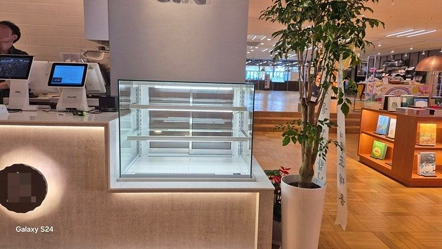
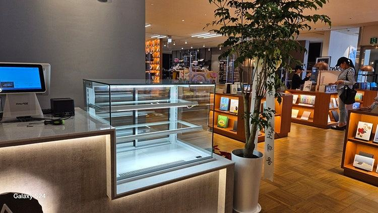
3. 조명 열과 진열 방식
조명은 생각보다 많은 열을 냅니다. 발열이 큰 조명을 쓰거나 진열 칸 바로 위에 붙여 두면 케이크 표면이 녹고 내부 온도가 출렁여 냉각 장치가 더 자주 돌게 됩니다.
원문에서는 색 왜곡이 적은 4000K 중립광 LED를 쓰고, 조명 열량을 1㎡당 10와트 이하로 설계한다고 설명합니다.
선반을 빈틈없이 채우면 냉기가 돌 길이 막혀 일부 칸만 과하게 차가워지고 다른 칸은 미지근해집니다. 이동식 선반을 쓰는 제품이라면 상품 높이에 맞춰 칸을 조정해 공기 흐름을 살려 두세요.
- 발열이 적은 LED 조명
- 선반 사이 공기 흐를 틈 남기기
4. 교체를 고민해야 하는 신호
설정 온도까지 내려가는 시간이 눈에 띄게 길어졌거나, 콤프레셔 소리가 예전보다 커지고 자주 끊겼다 이어진다면 점검이 필요합니다.
같은 부품을 여러 번 교체했는데도 증상이 돌아온다면 몸체 전체가 지쳤을 가능성이 높습니다.
판매 품목이 바뀐 경우도 수명이 다한 것과 비슷한 신호입니다. 페이스트리 위주에서 생크림 케이크 비중이 커졌다면 요구하는 온도대가 달라지므로, 지금 상품에 맞춘 구성으로 바꾸는 편이 오래 갑니다.
체크리스트
- 기계실 먼지 청소 주기
- 열원과의 거리와 통풍 공간
- 식힌 제품만 넣기, 문 열림 시간 줄이기
- 조명 발열과 선반 간격
- 냉각 속도와 소음 변화
현장에서 자주 보는 경우: 한 칸에 여러 디저트를 함께 넣을 때
디저트 매장은 한 대의 쇼케이스에 성격이 다른 제품을 함께 진열하는 경우가 대부분입니다. 원문에서는 생크림 케이크나 무스류는 2~5도, 버터크림 케이크는 5~8도, 일반 페이스트리는 실온에 가깝게 두는 것이 좋다고 설명합니다.
이렇게 기준이 다른 제품을 한 공간에 두면 공기 흐름이 고르지 않은 쇼케이스는 어떤 칸은 과하게 차가워 습기가 차고, 어떤 칸은 미지근해져 크림이 무너집니다.
냉기를 제품에 직접 쏘지 않고 공간 전체로 부드럽게 돌리는 순환 구조가 제품 상태뿐 아니라 장비가 무리하지 않게 하는 데도 중요한 이유입니다.
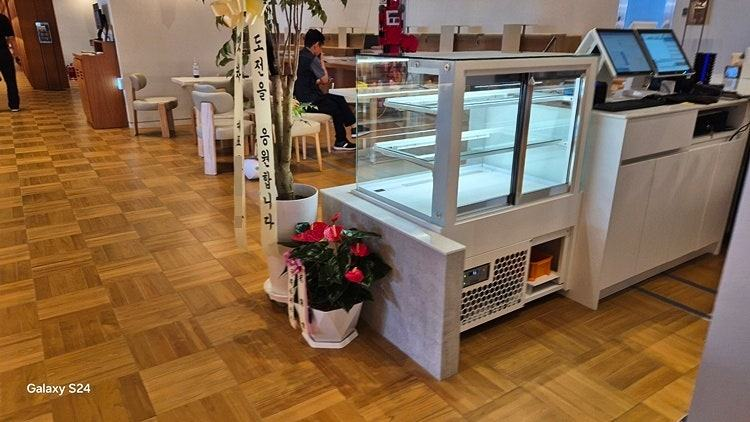
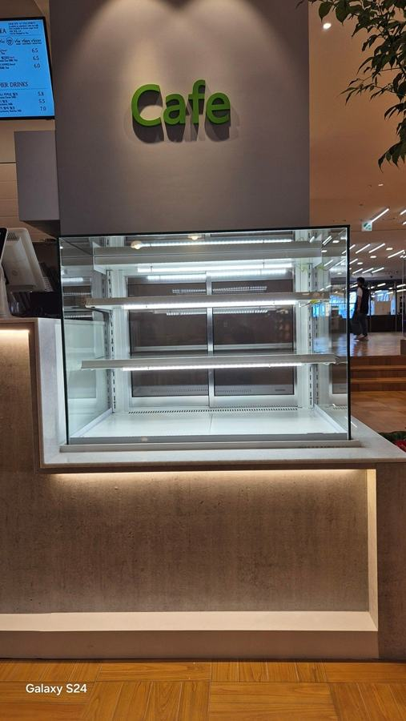
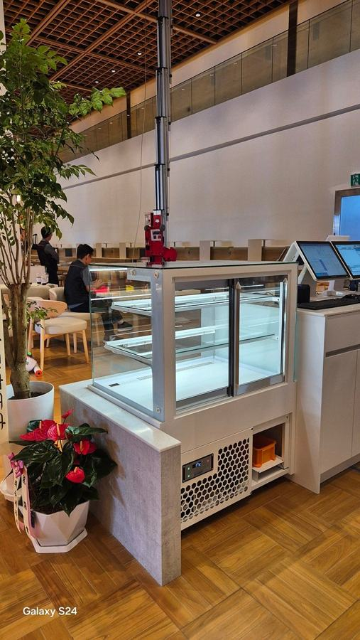
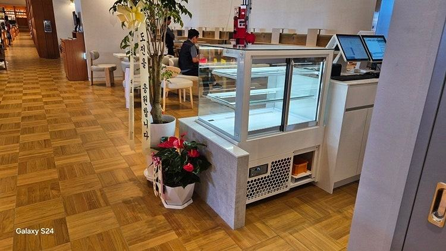
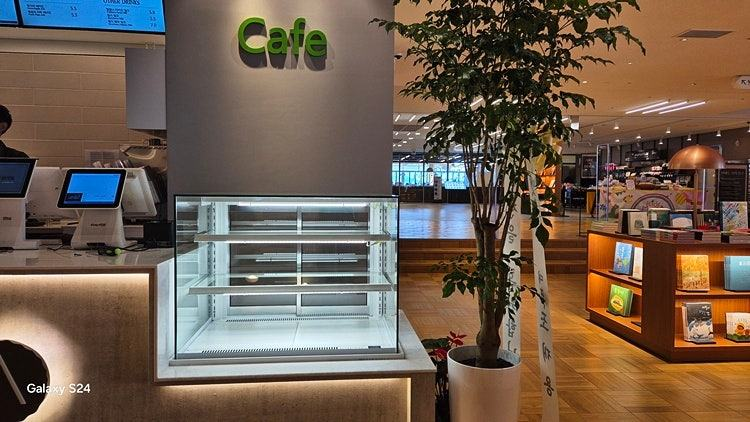
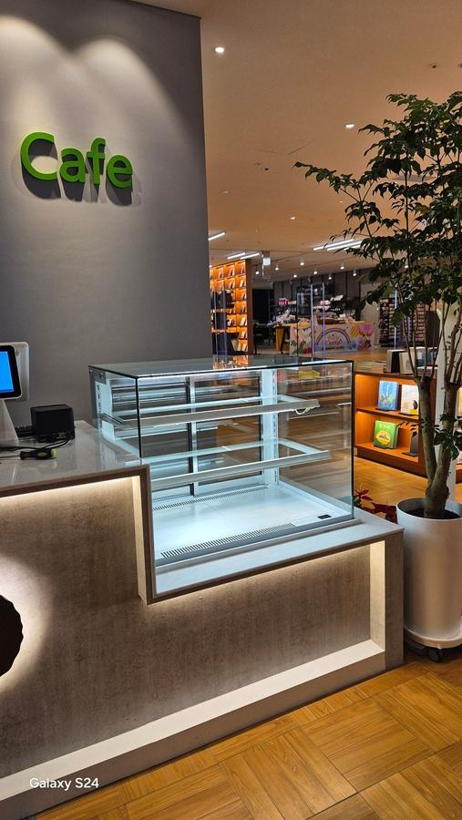
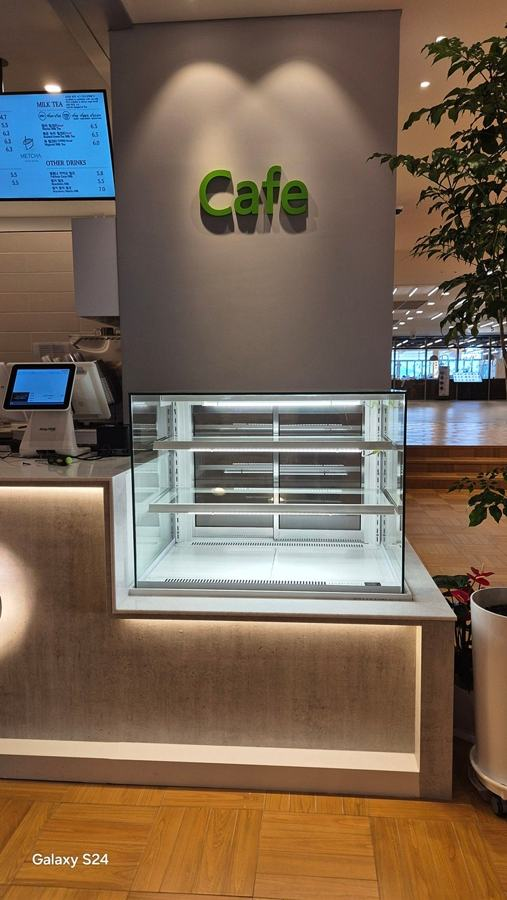
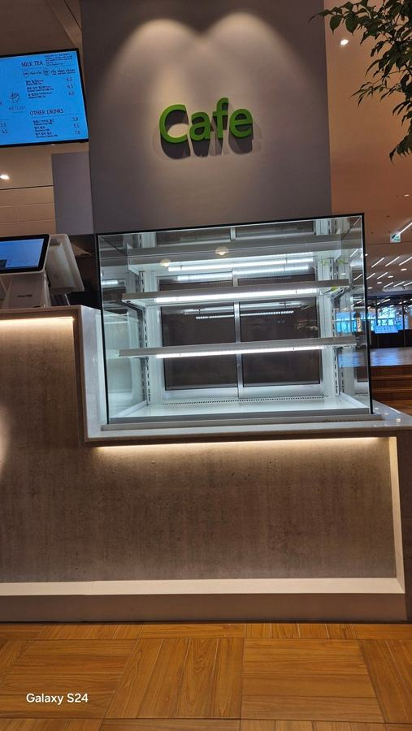
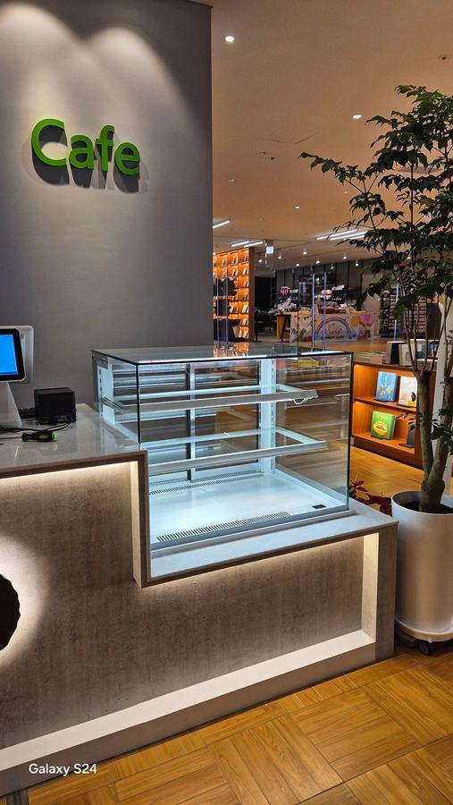

자주 묻는 질문
제과쇼케이스는 보통 몇 년 쓰나요?
사용 환경과 관리 습관에 따라 차이가 커서 일률적으로 말씀드리기 어렵습니다. 통풍과 먼지 관리, 습기 관리를 꾸준히 하는 매장일수록 같은 제품도 오래 씁니다.
기계실 청소는 얼마나 자주 해야 하나요?
밀가루 작업이 많은 빵집은 그릴에 먼지가 쌓이는 속도가 빠르니 눈으로 자주 확인해 주세요. 청소 전에는 반드시 전원을 끄시고, 내부 분해가 필요하면 A/S를 통해 받으세요.
오래된 쇼케이스 조명만 바꿔도 도움이 되나요?
발열이 큰 조명이라면 LED로 바꾸는 것만으로 내부 온도 변화가 줄고 제품 색도 또렷해집니다. 다만 냉각 자체가 약하다면 조명 교체와 함께 점검을 받아 보세요.
매장 조건에 맞춰 만드는 한성쇼케이스
원하시는 제품 사진과 설치할 공간 사진만 보내 주셔도 매장에 맞는 구성을 추천해 드립니다.
- 전국 240여 개 A/S 전담 센터 운영
- 본사 대량 자재 매입으로 품질 대비 합리적인 가격
- 유럽제·삼성 냉각 콤프레셔 적용
- 국내 최초 쇼케이스 전문 디자이너 상주
매장 폭과 원하는 진열 구성을 알려 주세요. 실측과 견적을 안내해 드립니다.
031-986-2458